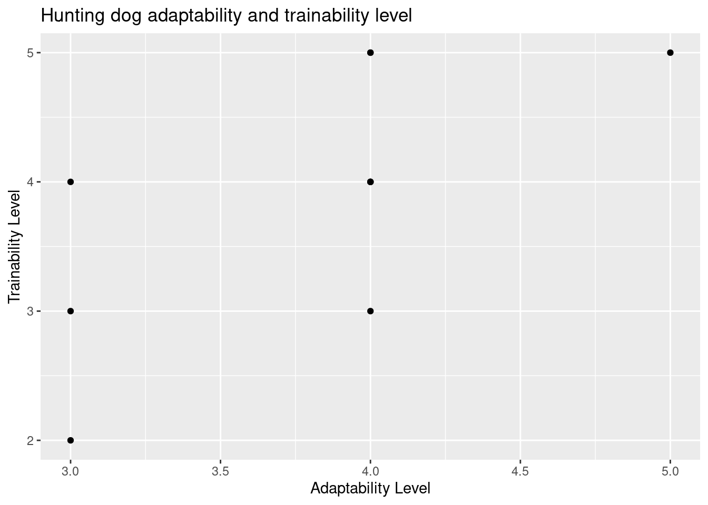
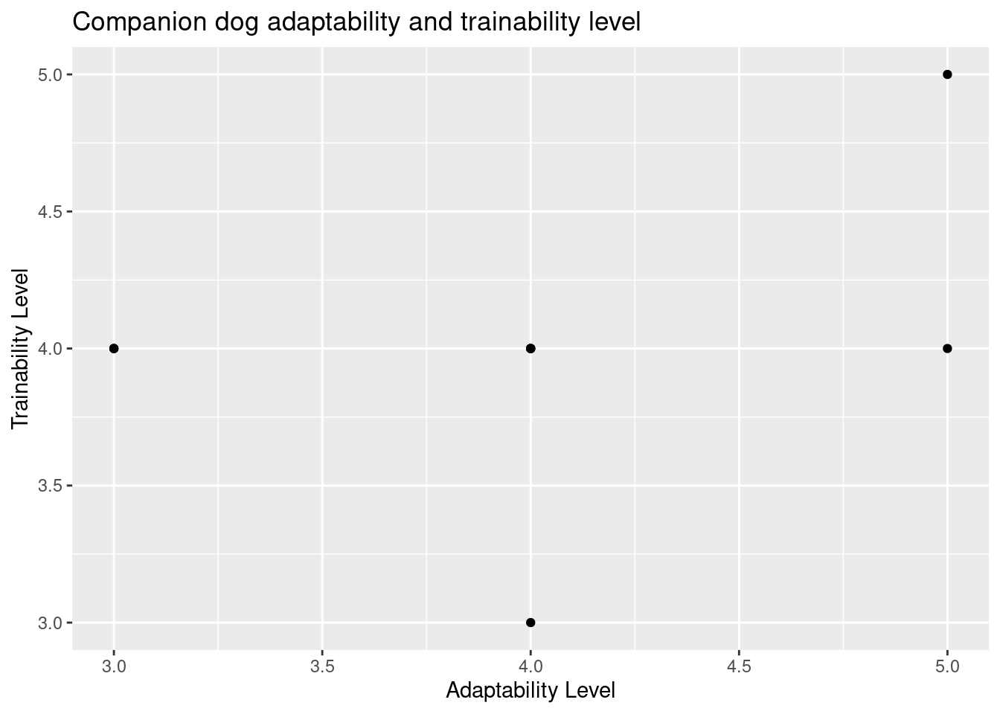
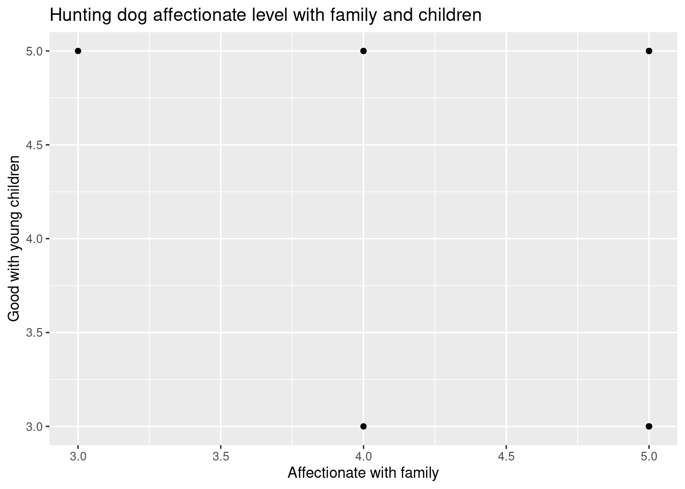
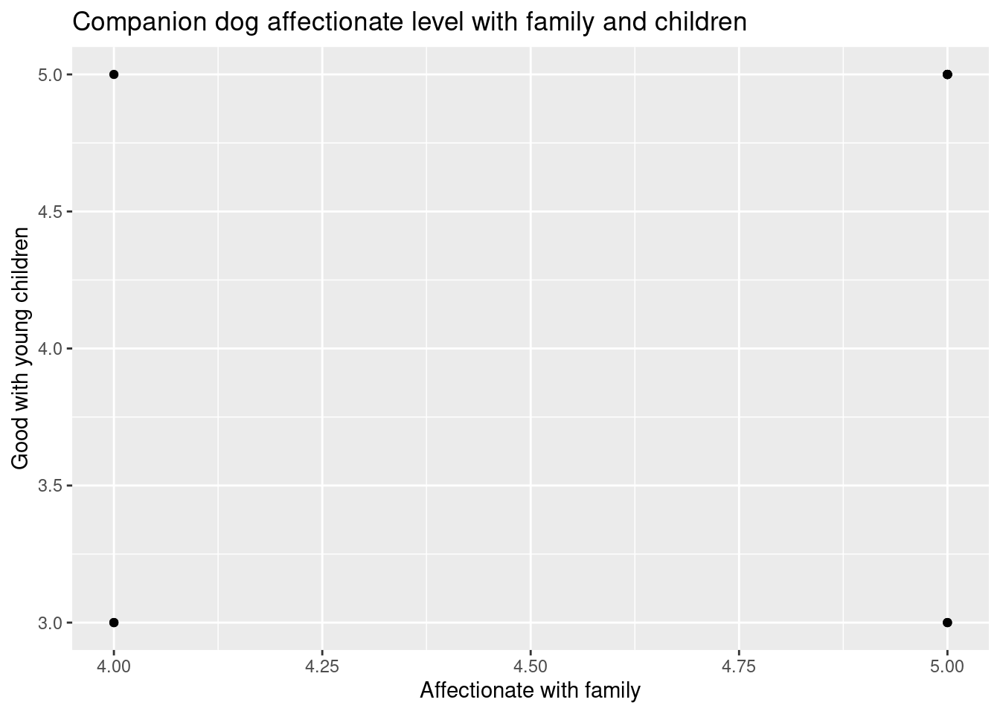
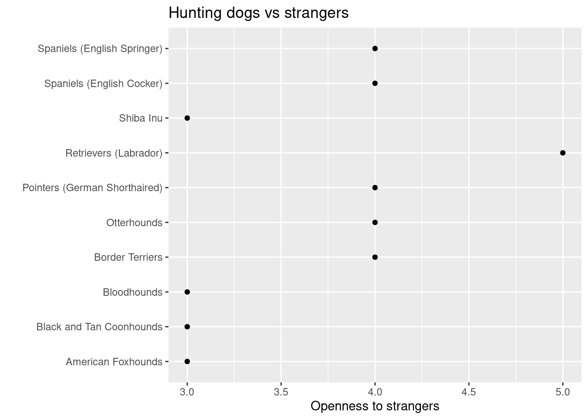
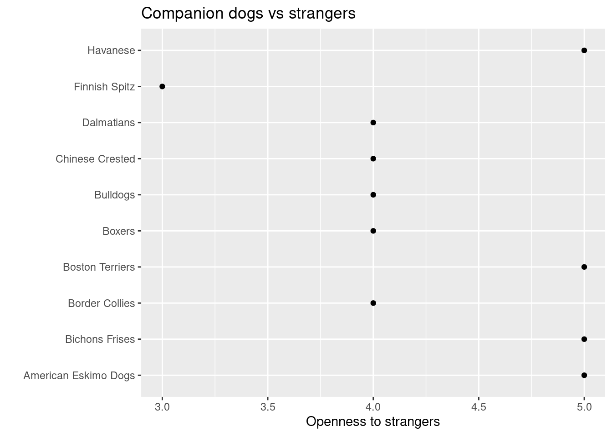

Rows: 195 Columns: 17
── Column specification ────────────────────────────────────────────────────────
Delimiter: ","
chr (3): Breed, Coat Type, Coat Length
dbl (14): Affectionate With Family, Good With Young Children, Good With Othe...
ℹ Use `spec()` to retrieve the full column specification for this data.
ℹ Specify the column types or set `show_col_types = FALSE` to quiet this message.
Rows: 16 Columns: 4
── Column specification ────────────────────────────────────────────────────────
Delimiter: ","
chr (4): Trait, Trait_1, Trait_5, Description
ℹ Use `spec()` to retrieve the full column specification for this data.
ℹ Specify the column types or set `show_col_types = FALSE` to quiet this message.
Looking at the data set, we chose these top 10 popular hunting and companion dogs to compare how their personality and behavior matches with one another. We are also comparing how different hunting dogs are to people either with strangers or families from companion dogs. Companion dogs are meant to be more friendlier and playful in nature than hunting dogs so we are comparing them in that aspect as well. Hunting dogs we chose were originally bred to hunt birds, or track rabbits and hares using their strong sense of smell but overtime they were kept as a house pet. So, we want to see what changes this has also caused on their adaptability and trainability level.
Below are the top 10 hunting and companion dogs we chose to compare:
Hunting Dogs
Labrador Retreiver
Shiba Inu
Pointers (German Shorthaired)
American Foxhound
English Springer Spaniels
Black and Tan Coonhounds
Otterhounds
Border Terrier
English Cocker Spaniels
Bloodhounds
Companion dogs
Bichon Frises
Bulldogs
Dalmatians
Havanese
Finnish Spitz
American Eskima Dogs
Boston Terriers
Chinese Crested
Border Collies
Boxers
Hypothesis
Companion dogs are more friendly than hunting dogs.
Abstract:
Dogs are a very popular pet found in many households. They are bred to provide companionship to the human but some dogs are bred to do hunting. But over time some of these hunting dogs are also being kept as a companion dog instead. For example, breeds like retriever and spaniels were bred to have traits like obedience, affectionate and easy to train. Because of these traits, these dogs became more popular to be kept in the home as a family pet. Since hunting dogs are known to be fierce, and independent by nature the focus of this research is to see whether hunting dogs could be friendlier and trainable as companion dogs.
Introduction
Dogs are the domestic mammal from the family Canidae and order Carnivora which is related to foxes and jackals. For more than 12,000 years dogs have been on the side of humans as a friend, protector, herding dogs or hunting companion. Humans have also modified or genetically engineered dogs according to the characteristics they want in the dog. (Britannica). According to Fédération Cynologique Internationale (FCI), 339 breeds of dogs are recognized internationally which are divided into 10 groups depending on the dog’s purpose or their appearance among which includes companion and hunting dogs. (Coren, 2013)
Companion dogs are trained differently depending on their living environment; they are trained to be friendlier, more devoted, easier to talk to, and more convenient to have around the house. Bichon Frises, Bulldog, Dalmatian, Havanese, Finnish Spitz, American Eskimo Dog, Boston Terrier, Chinese Crested, Border Collies, and Boxers are the companion dogs selected for this data. These dogs are well recognized for being friendly, intelligent, and simple to teach. They make wonderful home pets and companions for children.
On the other hand, hunting dogs may share similar characteristics, but they require additional training in an outside setting. They often need special diets to help them construct their bodies in a certain way, and they need to be trained to be fast, strong, and adaptable. Labrador Retreiver, Shiba Inu, Pointers (German Wirehaired), American Foxhound, Spaniels (English Springer), Black and Tan Coonhounds, Otterhounds, Border Terrier, Bloodhounds, and Spaniel (English Cocker) are the hunting dogs selected for this data. These dogs were selected based on their hunting abilities, such as their ability to hunt small or large animals, birds, or their senses that aid in the hunter’s ability to locate its prey more quickly. They are often taught according to the hunter’s requirements.
#install.packages("janitor")library(janitor)
Attaching package: 'janitor'
The following objects are masked from 'package:stats':
chisq.test, fisher.test
Since exploratory data randomly chooses and filters out dog breed from the whole data set, some of the dogs that we chose were missing during exploratory analysis. So we used breed_traits that shows the whole dog data set and by using ggplot() we visualized the data so that we can compare different personalities of hunting dogs and companion dogs. We mostly used geom_point to visualize the data that plots the data by creating a scatter plot.
Throughout the whole project, we are using the following function to visualize our data.
The function “select” selects the desired traits out of all traits listed in the breed_traits data set that we are choosing to answer our research question.
The function “slice” selects the top 10 dogs that we chose to compare out of all the breeds in the breed_traits data set.
The function ggplot() and geom_point helps to plot and visualize the data set by creating a scatter plot.
The adaptability level for companion dogs on average is also 4.0.
breed_traits %>%select('breed', 'affectionate_with_family', 'good_with_young_children', 'openness_to_strangers', 'playfulness_level', 'watchdog_protective_nature', 'adaptability_level', 'trainability_level') %>%slice (1,43,9,192,26,127,176,97,47,46) %>%ggplot() +geom_point(mapping =aes(x = adaptability_level, y = trainability_level)) +labs(title ="Hunting dog adaptability and trainability level",x ="Adaptability Level",y ="Trainability Level")

As in the above plot, geom_point() is used to visualize the data by creating a scatter plot but it is used to compare the relationship between two different variables which is trainability level and adaptability level.
breed_traits %>%select(breed, 'affectionate_with_family', 'good_with_young_children', 'openness_to_strangers', 'playfulness_level', 'watchdog_protective_nature', 'adaptability_level', 'trainability_level') %>%slice (45,5,51,24,187,119,21,79,32,14) %>%ggplot() +geom_point(mapping =aes(x = adaptability_level, y = trainability_level)) +labs(title ="Companion dog adaptability and trainability level",x ="Adaptability Level",y ="Trainability Level")

Looking at the data above on adaptability level and trainability level of hunting and companion dogs, hunting dogs are pretty much adaptable as companion dogs with the average compatibility level being around 4 out of 5. As for the trainability level, it looks like hunting dogs need more training than companion dogs since trainability level for companion dogs are much higher than hunting dogs.
breed_traits %>%select('breed', 'affectionate_with_family', 'good_with_young_children', 'openness_to_strangers', 'playfulness_level', 'watchdog_protective_nature', 'adaptability_level', 'trainability_level') %>%slice (1,43,9,192,26,127,176,97,47,46) %>%ggplot() +geom_point(mapping =aes(x = affectionate_with_family, y = good_with_young_children)) +labs(title ="Hunting dog affectionate level with family and children",x ="Affectionate with family",y ="Good with young children")

breed_traits %>%select(breed, 'affectionate_with_family', 'good_with_young_children', 'openness_to_strangers', 'playfulness_level', 'watchdog_protective_nature', 'adaptability_level', 'trainability_level') %>%slice (45,5,51,24,187,119,21,79,32,14) %>%ggplot() +geom_point(mapping =aes(x = affectionate_with_family, y = good_with_young_children)) +labs(title ="Companion dog affectionate level with family and children",x ="Affectionate with family",y ="Good with young children")

For both hunting and companion dogs, the affectionate level with both family and children are pretty much the same with the average being 4.0.
breed_traits %>%select('breed', 'affectionate_with_family', 'good_with_young_children', 'openness_to_strangers', 'playfulness_level', 'watchdog_protective_nature', 'adaptability_level', 'trainability_level') %>%slice (1,43,9,192,26,127,176,97,47,46) %>%ggplot() +geom_point(mapping =aes(x = openness_to_strangers, y = breed)) +labs(title ="Hunting dogs vs strangers",x ="Openness to strangers",y ="")

breed_traits %>%select(breed, 'affectionate_with_family', 'good_with_young_children', 'openness_to_strangers', 'playfulness_level', 'watchdog_protective_nature', 'adaptability_level', 'trainability_level') %>%slice (45,5,51,24,187,119,21,79,32,14) %>%ggplot() +geom_point(mapping =aes(x = openness_to_strangers, y = breed)) +labs(title ="Companion dogs vs strangers",x ="Openness to strangers",y ="")

For companion dogs, the level of openness to strangers is higher than the hunting dogs. Most of the hunting dogs are not that open to strangers as much as companion dogs.
As for the playful nature, companion dogs are more playful in nature than hunting dogs which can be reasonable since hunting dogs were primarily bred to be more alert in nature.
Conclusion
Since most of the dogs that were chosen are now adapted to be a house pet rather than used for hunting as they were to breed, most of them seem as equally adaptable, trainable and welcoming as companion dogs. Except for some dogs like Shiba Inu, and Bloodhounds, all other hunting dogs seem pretty much similar to companion dogs. But even with different personalities both hunting and companion dogs have so many similar traits like both of them being equally affectionate with family and young children, and both of them being equally adaptable and trainable. So looking at the data, this supports our hypothesis that hunting dogs can be as adaptable, friendly and trainable as dogs bred for being a companion.